2026-10-17。现有工程内通过绑定项目 UUID 的 API 修改；未导入替换工程，未操作桌面鼠标键盘。
| 位置 | 接口 | 连接与电平 |
|---|---|---|
| 核心板 | 3×CAN | 三针直立GH1.25：1 GND / 2 CANH / 3 CANL；120Ω 默认DNP，仅总线两端安装 |
| 核心板 | USART1/2/3/6 | 四针直立GH1.25：1 GND / 2 5V_PORT / 3 MCU_TX / 4 MCU_RX；信号3.3V |
| 核心板 | SPI3 / I2C2 | 六针/四针直立GH；3.3V；SPI1专供BMI088 |
| 核心板 | 自定义2×3排针 | 1 GND / 2 3V3_AUX / 3 PA0 / 4 PA1 / 5 PB0 / 6 PB1；2.54mm直立排针 |
| 上层扩展 | UART4/5/7/8/9、USART10、LPUART1 | 已连接到核心J801；扩展板原生原理图与PCB尚未完成 |
| 核心板 | USB4145直立USB-C | 自供电USB FS设备；VBUS只检测，不从USB给整板供电 |
| 核心板 | XT30 | 12–48V稳压电源输入；48V是最大持续值，不适用于满电超过48V的电池 |
| 功能 | 型号 | 立创编号 |
|---|---|---|
| CAN GH3 | BM03B-GHS-TBT(LF)(SN) | C161691 |
| UART/I2C GH4 | BM04B-GHS-TBT(LF)(SN) | C161692 |
| SPI GH6 | BM06B-GHS-TBT(LF)(SN) | C189892 |
| 自定义排针 | 2.54-2*3PLTPZ | C3152771 |
| 直立USB | USB4145-03-0070-C | C5815189 |
| 核心板B2B ×2 | TFM-115-02-L-D-A | C5714577 |
| 扩展板配对候选 ×2 | SFM-115-02-L-D-A-K-TR | C3323938 |
| XT30直立输入 | XT30UPB-M | C428721 |
| 80V降压 | LMR38025SDRRR | C22405313 |
| 输入保险 | 0451002.MRL / 2A 125VDC | C99547 |
| 反接肖特基 | STPS3H100U / 100V | C283521 |
| 输入TVS | SMBJ48A-13-F | C135078 |
191 个器件实例直接引用官方封装。普通阻容以0402为主；100V输入MLCC、储能电容和加热电阻按电气额定值使用更大封装。J1101使用可追溯的XT30修正版：铜盘2.50mm、间距5mm，厂家推荐钻孔1.90mm。修正版没有完整3D关联。
GH线端端子采用 JST SSHL-002T-P0.2，配对应GHR壳体。USB四个壳焊脚共用pad 0、拨动开关四个壳焊脚共用pad 4，是有意的同网编号，不属于漏封装。USB槽孔钢网工艺、排针和板间连接器的最终装配尺寸仍需装配审核。
| 负载 | 电压 V | 预算 A | 折合5V A |
|---|---|---|---|
| MCU及板载3.3V电路预留 | 3.3 | 0.8 | 0.6 |
| 三路CAN最坏工况预留 | 5 | 0.24 | 0.24 |
| IMU加热满占空比 | 5 | 0.1 | 0.1 |
| 3V3_AUX外部共享额度 | 3.3 | 0.3 | 0.225 |
| 5V_PORT外部共享额度 | 5 | 0.4 | 0.4 |
| 其他板载/余量 | 5 | 0.1 | 0.1 |
5V连续预算2A；目前分配 1.665A，剩余 0.335A。3.3V转换效率按88%估计，需实测替换。外部所有5V端口合计400mA，所有3V3_AUX端口合计300mA，不能每个插座分别取该额度。
45.3kΩ、1% ILIM按TI经验公式估算限流范围 519–644mA；400mA是工作预算而非限流阈值。5V_PORT过流锁存后需NRST复位重试。
5V输出名义 5.016V，88.7kΩ设频约 299kHz。15µH电感与3×22µF输出电容按TI的48V→5V/300kHz参考档配置。输入4×4.7µF/100V名义18.8µF不等于48V偏压下有效值；需取得Murata偏压与温度曲线，保证最坏条件总有效值≥4.7µF。
18.8µF在48V的名义储能为 21.7mJ、充电电荷 0.902mC。输入MLCC插拔浪涌不受降压软启动控制；当前没有主动输入浪涌限流。必须在实际电源阻抗、线束和连接器条件下测输入峰值/振铃、保险I²t及反复热插拔。TVS额定钳位接近80V器件上限，走线寄生过冲不能忽略；未通过该测试前不能宣称48V输入已验收。
SW1101只控制EN，不切断XT30输入。需要维护级隔离时应拔掉输入连接器或使用上游断电装置。
核心板在最底，B2B公座在核心TOP、配对母座在扩展BOTTOM。USB、GH、XT30和自定义排针必须从扩展板窗口或外轮廓外露，同时预留插头外壳、锁扣和手指操作空间。旧版PCB的100触点、下挂扩展板布局已经失效。
本轮已确定60触点针序和核心接口器件，尚未完成这套212器件方案的40mm实际布局、上下板碰撞或3D审查。两组B2B的真实配对高度、公母朝向、底面反视针序、固定柱与插拔受力须用厂家机械图和实装进一步核对。不能只依据裸插座高度判断可插拔。
IMU岛内为BMI088、就近去耦、加热电阻、NTC及TMP302；MCU、降压和功率开关在岛外。保留机械桥并成组跨越电源、地和信号回流，避免大面积铜皮跨桥导致导热过强，也避免回流被槽切断。岛的尺寸/槽/桥尚未转成PCB制造结构。45°C为初始恒温验证目标；60°C硬件截止是保护，需验证温差、超调、复位关断、振动共振与零偏变化。
本次100球AF复核无冲突；IMU由SPI4改到SPI1，ACC_CS改PE5，VBUS检测改PC8，PE6接PORT_FAULT_N。必须更新CubeMX/BSP和DMA请求配置；旧版SPI4/DMA及SDMMC/RMII等并发配置不能直接沿用。11路串口、SPI1/SPI3及ADC同时启用时的DMA/中断/Cache与带宽计划仍需固件工程验证。
ST H735数据手册；JST GH机械图与配套件；GCT USB4145；TI LMR38025；TI TPS2553限流器；AMASS XT30厂家图（本地副本）。
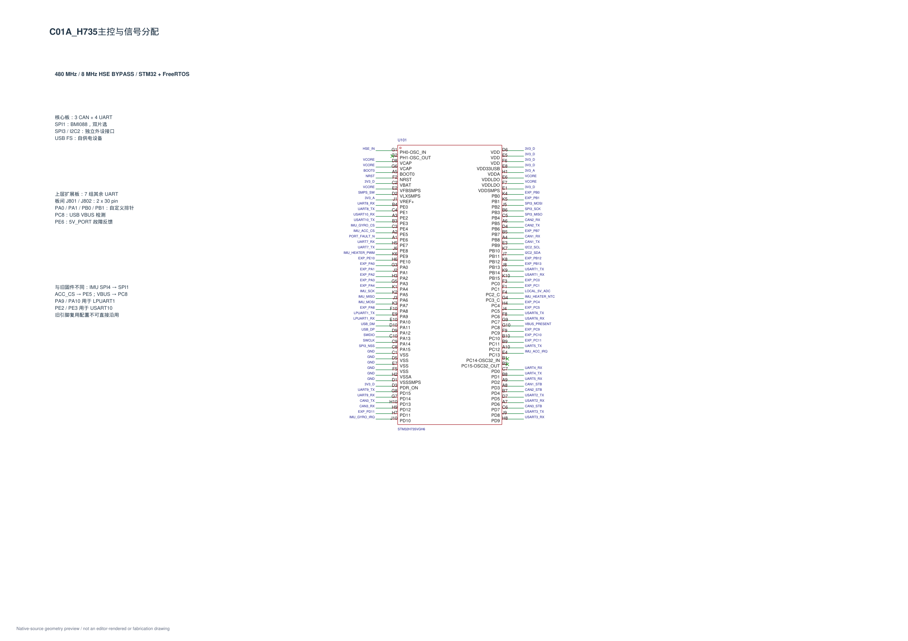
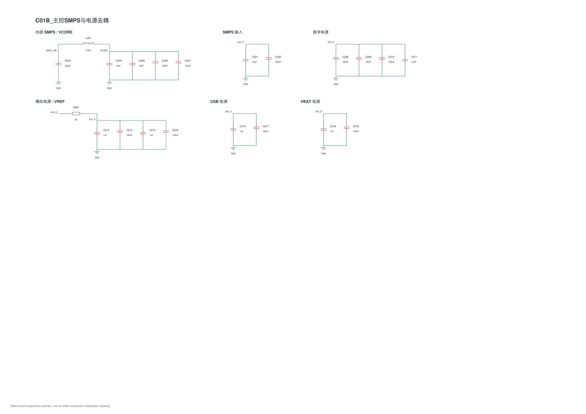
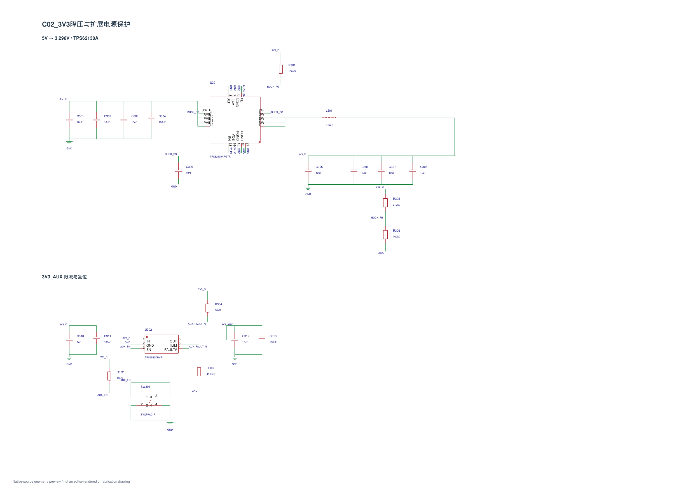
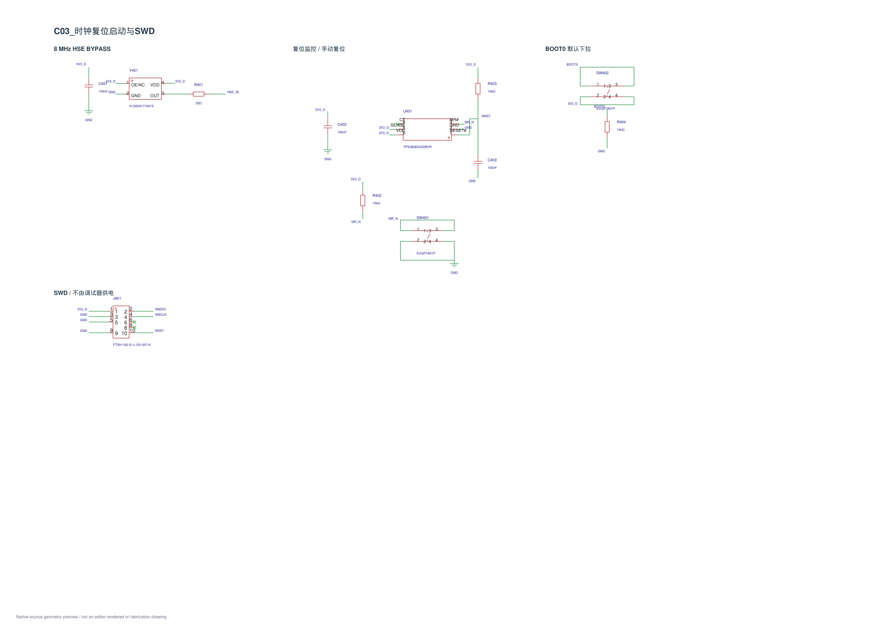
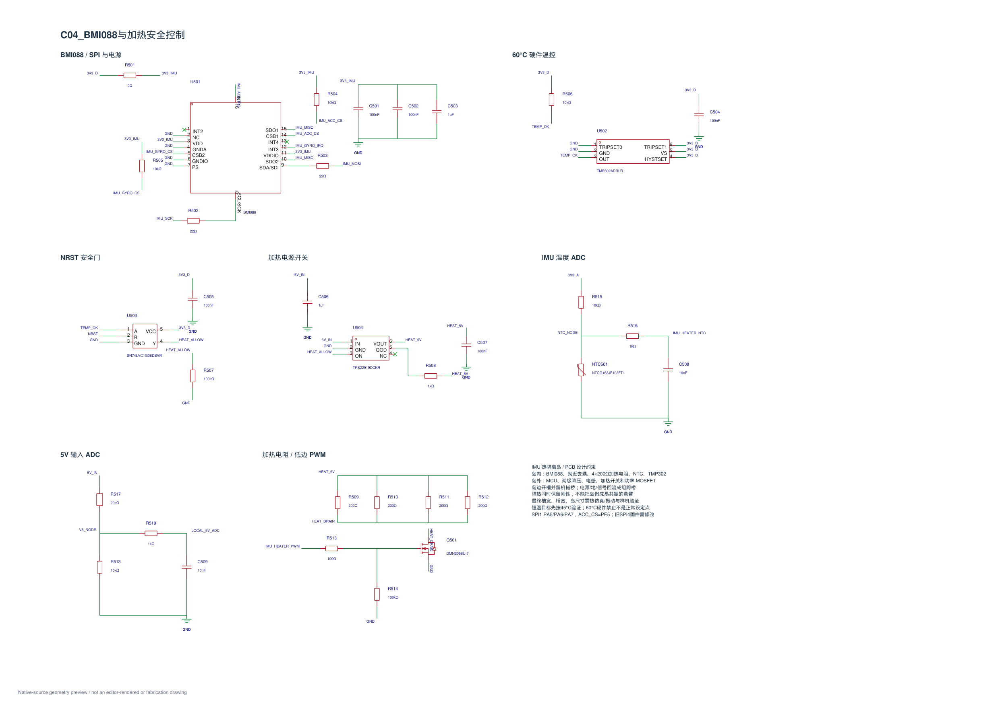
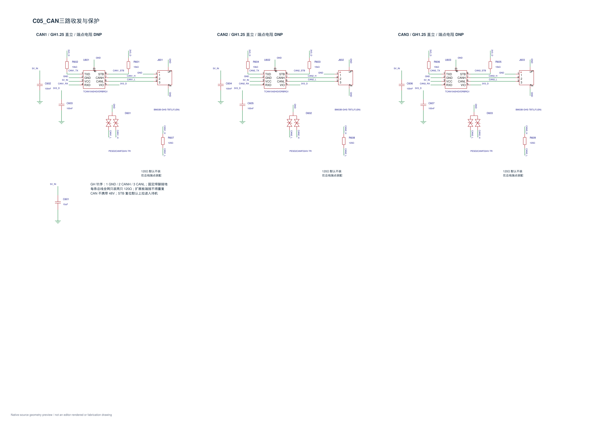
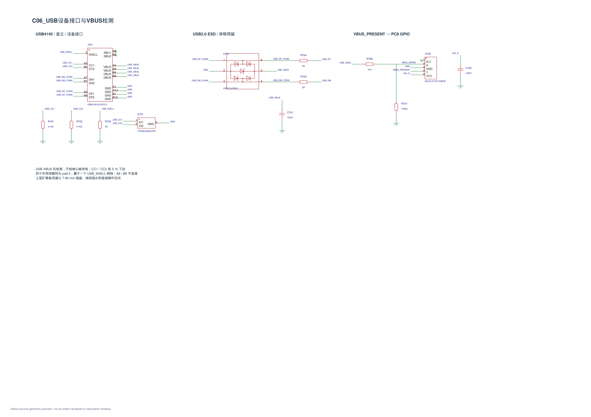
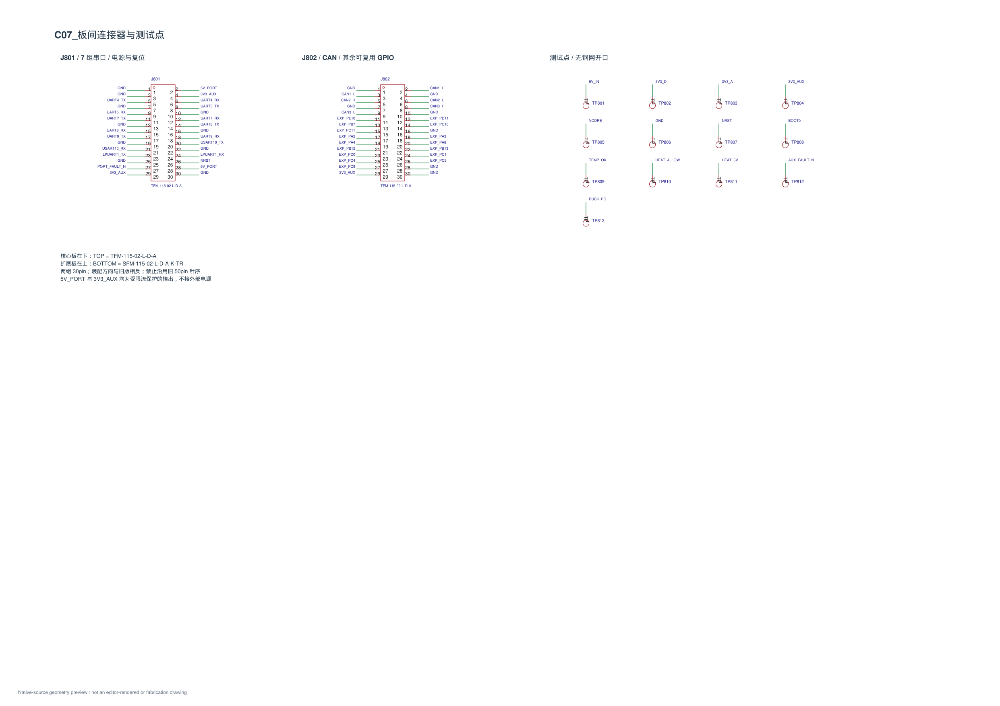
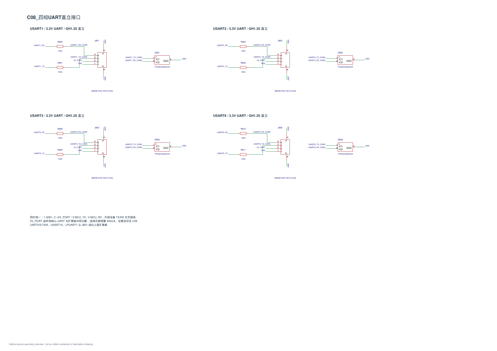
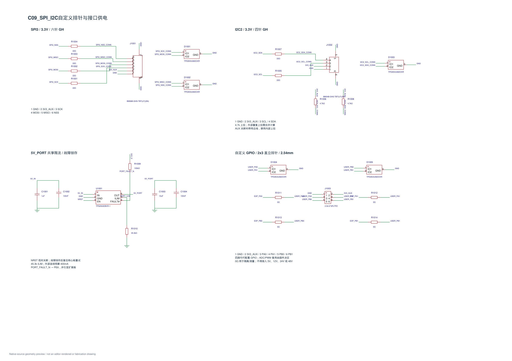
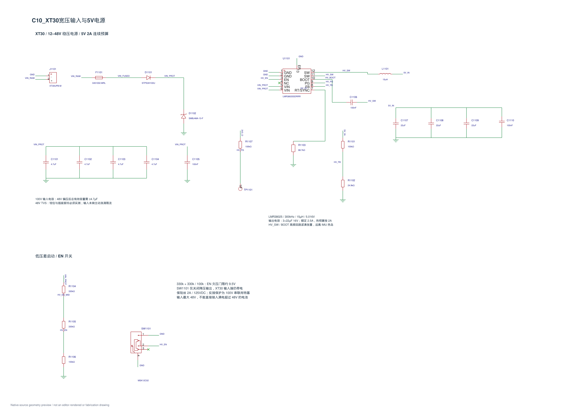